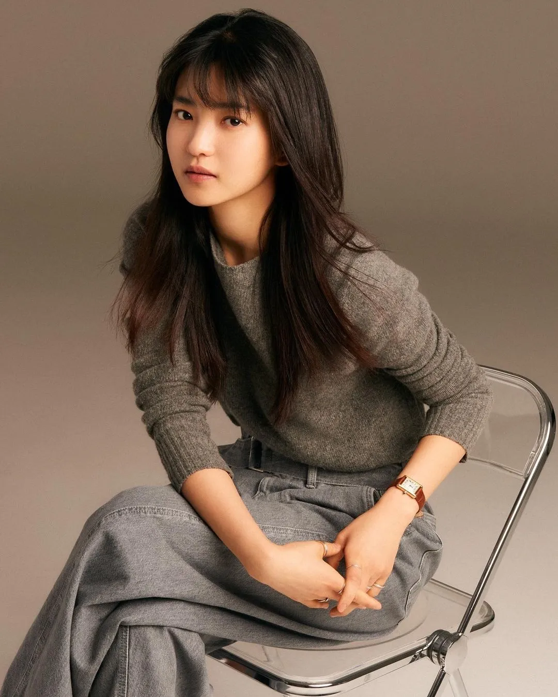

연기를 하면서 드는 재미와 뿌듯함도 있지만, 그 순간에는 자기반성과 자책으로 허우적대요. 어떻게 하면 내가 이 영화 안에서 작품을 좋은 방향으로 이끌어 가는데 기여할 수 있을까, 영화가 원하는 대로 캐릭터를 운영할 수 있을까를 계속 고민하는 거죠. 그런 괴로움은 예전보다 더 늘었어요. 돌이켜보면 연극할 때부터 작품마다 직업을 둘러싼 책임감과 즐거움을 두고 부단히 고민했어요. 아직 답은 못 찾았죠. 
나다운 것이 무엇인지 잘 모르겠어요. 저란 사람은··· 물건을 잘 떨어뜨려요. 화장실 불 끄는 것도 자주 잊고, 했던 말도 종종 까먹고요. 그래서 김태리답게 잘 살자! 그래서는 안 될 것 같고.(웃음) 그보다는 다른 누군가를 동경하는 건 좋지만, 그리고 배울 점이 있다면 배우는 건 좋은 태도지만 그 또한 과하면 안 될 것 같다는 생각이 들어요. '나는 별로인데 저 사람은 최고구나' 하고 나를 잃어버리는 건 경계해야죠. 하루에 휴대폰 두 번 떨어뜨리고, 액정 깨뜨리는 저지만 그럼에도 나에 대한 판단과 관심을 유지하는 것이 중요한 것 같아요. 나에 함몰되지 않으면서도요.